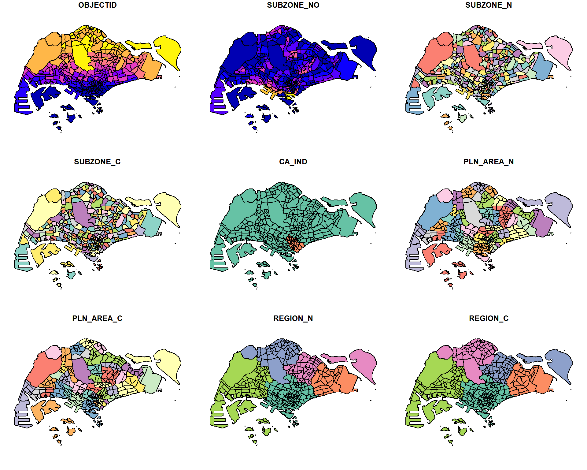
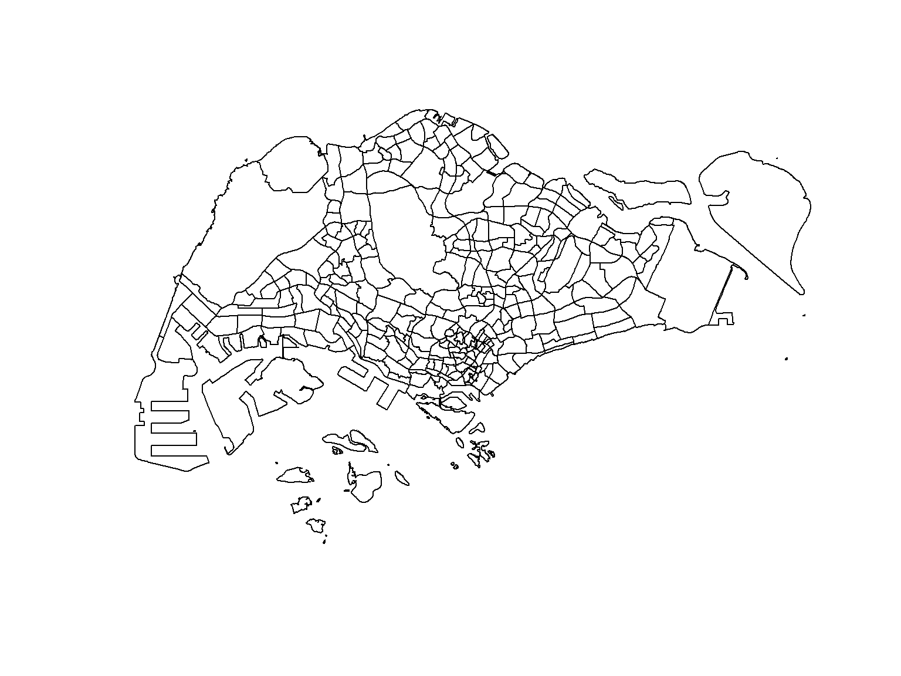
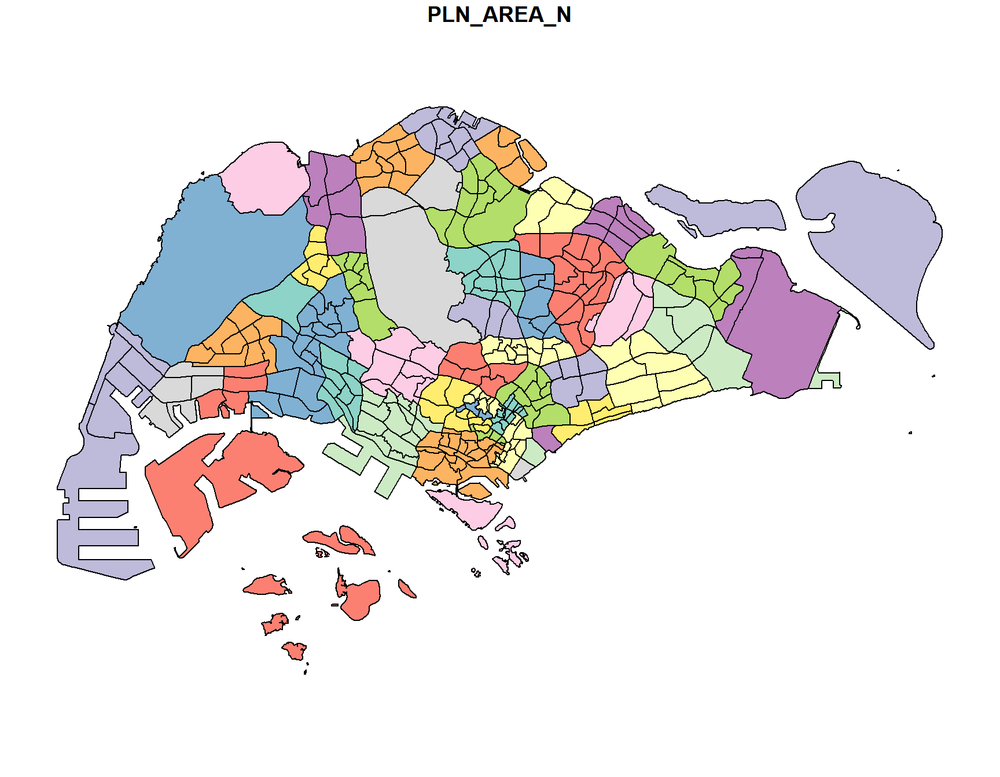
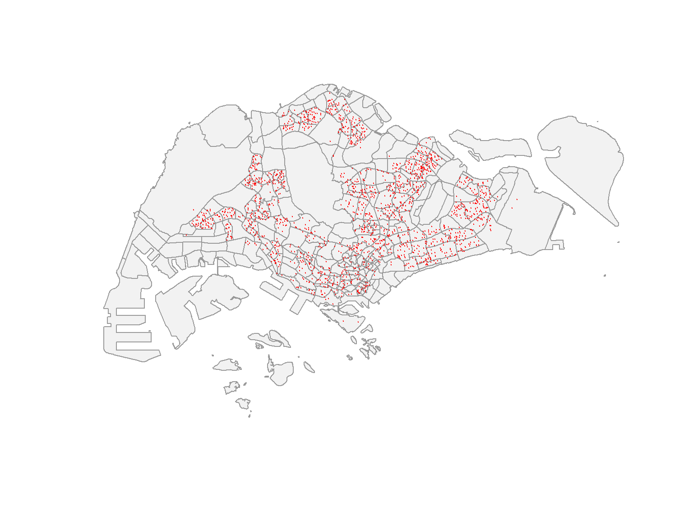
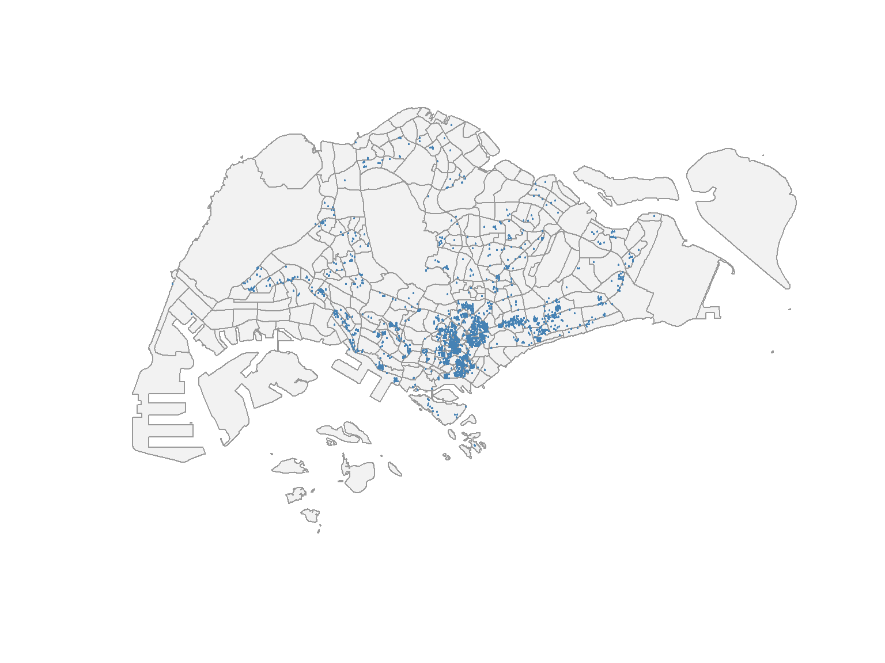
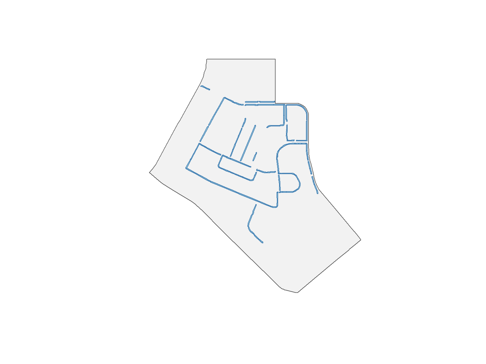
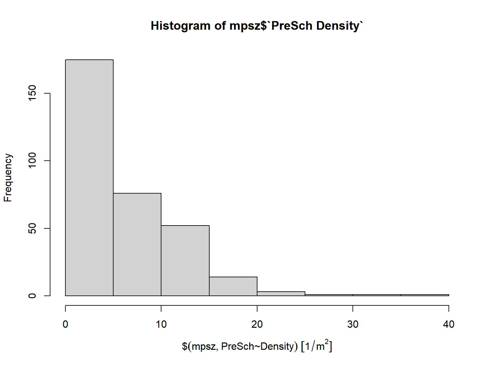
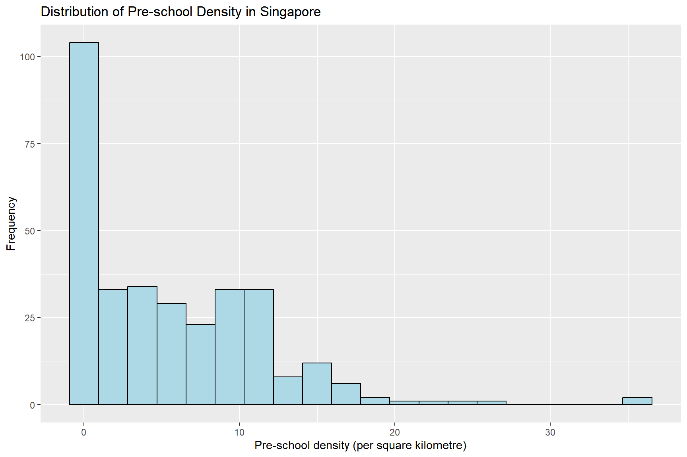
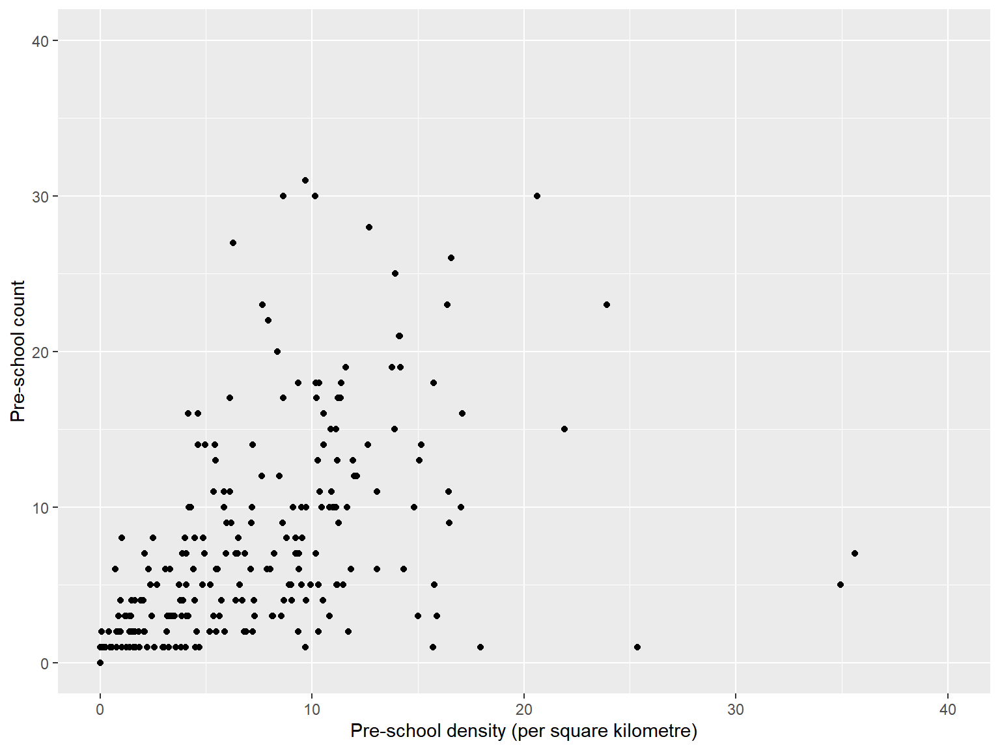

pacman::p_load(sf, tidyverse)Hands-on Exercise 1A: Geospatial Data Science with R
1 Learning Outcome
In this hands-on exercise, I learn how to use the sf and tidyverse packages to import, inspect, transform, process, and visualise geospatial data in R. I also practise converting an aspatial data frame into a simple feature data frame and applying basic geoprocessing methods.
The main tasks covered are:
- importing polygon, line, and point geospatial data;
- examining the geometry and attributes of simple feature data frames;
- assigning and transforming coordinate reference systems;
- converting longitude and latitude values into point features;
- performing buffer, intersection, and area calculations; and
- using simple exploratory plots to examine the results.
2 Data Acquisition
I used the four data sets specified in the exercise:
- Master Plan 2014 Subzone Boundary (Web) from data.gov.sg;
- Pre-Schools Location from data.gov.sg;
- Cycling Path from LTA DataMall; and
- the latest Singapore listings.csv from Inside Airbnb.
The geospatial files are stored in data/geospatial, while the Airbnb CSV file is stored in data/aspatial.
3 Getting Started
The sf package is used for handling geospatial data. The tidyverse collection provides functions for importing, wrangling, and visualising data.
4 Importing Geospatial Data
4.1 Importing polygon feature data in shapefile format
I first import the Master Plan 2014 Subzone Boundary shapefile. The dsn argument gives the folder containing the shapefile, while layer gives the shapefile name without its extension.
mpsz <- st_read(
dsn = "data/geospatial",
layer = "MP14_SUBZONE_WEB_PL"
)Reading layer `MP14_SUBZONE_WEB_PL' from data source
`C:\SHKnighter\ISSS608-VAA\Hands-on_Ex\Hands-on_Ex01A\data\geospatial'
using driver `ESRI Shapefile'
Simple feature collection with 323 features and 15 fields
Geometry type: MULTIPOLYGON
Dimension: XY
Bounding box: xmin: 2667.538 ymin: 15748.72 xmax: 56396.44 ymax: 50256.33
Projected CRS: SVY21The output shows that mpsz contains 323 multipolygon features and 15 attribute fields. The layer is stored in the SVY21 projected coordinate system.
4.2 Importing polyline feature data in shapefile format
Next, I import the Cycling Path shapefile as a line feature data frame.
cyclingpath <- st_read(
dsn = "data/geospatial",
layer = "CyclingPathGazette"
)Reading layer `CyclingPathGazette' from data source
`C:\SHKnighter\ISSS608-VAA\Hands-on_Ex\Hands-on_Ex01A\data\geospatial'
using driver `ESRI Shapefile'
Simple feature collection with 4830 features and 7 fields
Geometry type: MULTILINESTRING
Dimension: XY
Bounding box: xmin: 11721.1 ymin: 27550.13 xmax: 42809.37 ymax: 49702.59
Projected CRS: SVY21The current Cycling Path data contains 4830 multiline features and is also stored in SVY21.
4.3 Importing point feature data in KML format
For a KML file, I provide the complete file path and extension.
preschool <- st_read(
"data/geospatial/PreSchoolsLocation.kml"
)Reading layer `PRESCHOOLS_LOCATION' from data source
`C:\SHKnighter\ISSS608-VAA\Hands-on_Ex\Hands-on_Ex01A\data\geospatial\PreSchoolsLocation.kml'
using driver `KML'
Simple feature collection with 1925 features and 2 fields
Geometry type: POINT
Dimension: XYZ
Bounding box: xmin: 103.6824 ymin: 1.247759 xmax: 103.9897 ymax: 1.462134
z_range: zmin: 0 zmax: 0
Geodetic CRS: WGS 84The imported preschool object contains 1925 point features. Unlike the first two layers, it is initially stored in the WGS 84 geographic coordinate system.
5 Checking the Content of a Simple Feature Data Frame
Before carrying out any geospatial operations, I examine the geometry and attribute information in mpsz.
5.1 Working with st_geometry()
st_geometry(mpsz)Geometry set for 323 features
Geometry type: MULTIPOLYGON
Dimension: XY
Bounding box: xmin: 2667.538 ymin: 15748.72 xmax: 56396.44 ymax: 50256.33
Projected CRS: SVY21
First 5 geometries:This output summarises the geometry type, bounding box, and coordinate reference system of the layer.
5.2 Working with glimpse()
glimpse(mpsz)Rows: 323
Columns: 16
$ OBJECTID <int> 1, 2, 3, 4, 5, 6, 7, 8, 9, 10, 11, 12, 13, 14, 15, 16, 17, ~
$ SUBZONE_NO <int> 1, 1, 3, 8, 3, 7, 9, 2, 13, 7, 12, 6, 1, 5, 1, 1, 3, 2, 2, ~
$ SUBZONE_N <chr> "MARINA SOUTH", "PEARL'S HILL", "BOAT QUAY", "HENDERSON HIL~
$ SUBZONE_C <chr> "MSSZ01", "OTSZ01", "SRSZ03", "BMSZ08", "BMSZ03", "BMSZ07",~
$ CA_IND <chr> "Y", "Y", "Y", "N", "N", "N", "N", "Y", "N", "N", "N", "N",~
$ PLN_AREA_N <chr> "MARINA SOUTH", "OUTRAM", "SINGAPORE RIVER", "BUKIT MERAH",~
$ PLN_AREA_C <chr> "MS", "OT", "SR", "BM", "BM", "BM", "BM", "SR", "QT", "QT",~
$ REGION_N <chr> "CENTRAL REGION", "CENTRAL REGION", "CENTRAL REGION", "CENT~
$ REGION_C <chr> "CR", "CR", "CR", "CR", "CR", "CR", "CR", "CR", "CR", "CR",~
$ INC_CRC <chr> "5ED7EB253F99252E", "8C7149B9EB32EEFC", "C35FEFF02B13E0E5",~
$ FMEL_UPD_D <date> 2014-12-05, 2014-12-05, 2014-12-05, 2014-12-05, 2014-12-05~
$ X_ADDR <dbl> 31595.84, 28679.06, 29654.96, 26782.83, 26201.96, 25358.82,~
$ Y_ADDR <dbl> 29220.19, 29782.05, 29974.66, 29933.77, 30005.70, 29991.38,~
$ SHAPE_Leng <dbl> 5267.381, 3506.107, 1740.926, 3313.625, 2825.594, 4428.913,~
$ SHAPE_Area <dbl> 1630379.27, 559816.25, 160807.50, 595428.89, 387429.44, 103~
$ geometry <MULTIPOLYGON [m]> MULTIPOLYGON (((31495.56 30..., MULTIPOLYGON (~glimpse() allows me to see the data type and sample values for every attribute. The geometry column stores the multipolygon features.
5.3 Working with head()
head(mpsz, n = 5)Simple feature collection with 5 features and 15 fields
Geometry type: MULTIPOLYGON
Dimension: XY
Bounding box: xmin: 25867.68 ymin: 28369.47 xmax: 32362.39 ymax: 30435.54
Projected CRS: SVY21
OBJECTID SUBZONE_NO SUBZONE_N SUBZONE_C CA_IND PLN_AREA_N
1 1 1 MARINA SOUTH MSSZ01 Y MARINA SOUTH
2 2 1 PEARL'S HILL OTSZ01 Y OUTRAM
3 3 3 BOAT QUAY SRSZ03 Y SINGAPORE RIVER
4 4 8 HENDERSON HILL BMSZ08 N BUKIT MERAH
5 5 3 REDHILL BMSZ03 N BUKIT MERAH
PLN_AREA_C REGION_N REGION_C INC_CRC FMEL_UPD_D X_ADDR
1 MS CENTRAL REGION CR 5ED7EB253F99252E 2014-12-05 31595.84
2 OT CENTRAL REGION CR 8C7149B9EB32EEFC 2014-12-05 28679.06
3 SR CENTRAL REGION CR C35FEFF02B13E0E5 2014-12-05 29654.96
4 BM CENTRAL REGION CR 3775D82C5DDBEFBD 2014-12-05 26782.83
5 BM CENTRAL REGION CR 85D9ABEF0A40678F 2014-12-05 26201.96
Y_ADDR SHAPE_Leng SHAPE_Area geometry
1 29220.19 5267.381 1630379.3 MULTIPOLYGON (((31495.56 30...
2 29782.05 3506.107 559816.2 MULTIPOLYGON (((29092.28 30...
3 29974.66 1740.926 160807.5 MULTIPOLYGON (((29932.33 29...
4 29933.77 3313.625 595428.9 MULTIPOLYGON (((27131.28 30...
5 30005.70 2825.594 387429.4 MULTIPOLYGON (((26451.03 30...The n argument lets me control how many complete records are displayed.
6 Plotting the Geospatial Data
I first use the base R plot() function to obtain a quick view of the subzone data.
plot(mpsz)
The default plot displays multiple maps for the attributes in the simple feature data frame.
To display only the subzone boundaries, I plot the geometry column.
plot(st_geometry(mpsz))
I can also plot the layer using one selected attribute.
plot(mpsz["PLN_AREA_N"])
Before transforming the pre-school layer, I try plotting it on top of the subzone layer.
plot(st_geometry(mpsz))
plot(st_geometry(preschool), add = TRUE, col = "red", pch = 20)
The pre-school points do not appear in the correct position because mpsz uses projected SVY21 coordinates while preschool still uses geographic WGS 84 coordinates.
7 Working with Projection
7.1 Assigning the EPSG code to a simple feature data frame
I check the coordinate reference system of mpsz.
st_crs(mpsz)Coordinate Reference System:
User input: SVY21
wkt:
PROJCRS["SVY21",
BASEGEOGCRS["SVY21[WGS84]",
DATUM["World Geodetic System 1984",
ELLIPSOID["WGS 84",6378137,298.257223563,
LENGTHUNIT["metre",1]],
ID["EPSG",6326]],
PRIMEM["Greenwich",0,
ANGLEUNIT["Degree",0.0174532925199433]]],
CONVERSION["unnamed",
METHOD["Transverse Mercator",
ID["EPSG",9807]],
PARAMETER["Latitude of natural origin",1.36666666666667,
ANGLEUNIT["Degree",0.0174532925199433],
ID["EPSG",8801]],
PARAMETER["Longitude of natural origin",103.833333333333,
ANGLEUNIT["Degree",0.0174532925199433],
ID["EPSG",8802]],
PARAMETER["Scale factor at natural origin",1,
SCALEUNIT["unity",1],
ID["EPSG",8805]],
PARAMETER["False easting",28001.642,
LENGTHUNIT["metre",1],
ID["EPSG",8806]],
PARAMETER["False northing",38744.572,
LENGTHUNIT["metre",1],
ID["EPSG",8807]]],
CS[Cartesian,2],
AXIS["(E)",east,
ORDER[1],
LENGTHUNIT["metre",1,
ID["EPSG",9001]]],
AXIS["(N)",north,
ORDER[2],
LENGTHUNIT["metre",1,
ID["EPSG",9001]]]]Although the layers are labelled SVY21, the appropriate EPSG code for Singapore SVY21 is 3414. I assign this EPSG code to both projected layers using st_set_crs().
mpsz <- st_set_crs(mpsz, 3414)
cyclingpath <- st_set_crs(cyclingpath, 3414)
st_crs(mpsz)Coordinate Reference System:
User input: EPSG:3414
wkt:
PROJCRS["SVY21 / Singapore TM",
BASEGEOGCRS["SVY21",
DATUM["SVY21",
ELLIPSOID["WGS 84",6378137,298.257223563,
LENGTHUNIT["metre",1]]],
PRIMEM["Greenwich",0,
ANGLEUNIT["degree",0.0174532925199433]],
ID["EPSG",4757]],
CONVERSION["Singapore Transverse Mercator",
METHOD["Transverse Mercator",
ID["EPSG",9807]],
PARAMETER["Latitude of natural origin",1.36666666666667,
ANGLEUNIT["degree",0.0174532925199433],
ID["EPSG",8801]],
PARAMETER["Longitude of natural origin",103.833333333333,
ANGLEUNIT["degree",0.0174532925199433],
ID["EPSG",8802]],
PARAMETER["Scale factor at natural origin",1,
SCALEUNIT["unity",1],
ID["EPSG",8805]],
PARAMETER["False easting",28001.642,
LENGTHUNIT["metre",1],
ID["EPSG",8806]],
PARAMETER["False northing",38744.572,
LENGTHUNIT["metre",1],
ID["EPSG",8807]]],
CS[Cartesian,2],
AXIS["northing (N)",north,
ORDER[1],
LENGTHUNIT["metre",1]],
AXIS["easting (E)",east,
ORDER[2],
LENGTHUNIT["metre",1]],
USAGE[
SCOPE["Cadastre, engineering survey, topographic mapping."],
AREA["Singapore - onshore and offshore."],
BBOX[1.13,103.59,1.47,104.07]],
ID["EPSG",3414]]7.2 Transforming the pre-school layer from WGS 84 to SVY21
The pre-school coordinates must be mathematically transformed rather than simply relabelled. I therefore use st_transform().
preschool <- st_transform(
preschool,
crs = 3414
)
st_geometry(preschool)Geometry set for 1925 features
Geometry type: POINT
Dimension: XYZ
Bounding box: xmin: 11203.01 ymin: 25596.33 xmax: 45404.24 ymax: 49300.88
z_range: zmin: 0 zmax: 0
Projected CRS: SVY21 / Singapore TM
First 5 geometries:After the transformation, both layers use EPSG:3414. The pre-school points can now be plotted in the correct locations.
plot(st_geometry(mpsz), col = "grey95", border = "grey60")
plot(st_geometry(preschool), add = TRUE, col = "red", pch = 20, cex = 0.25)
8 Importing and Converting Aspatial Data
8.1 Importing the aspatial data
The Airbnb data is stored as a CSV file. I import it as a tibble using read_csv().
listings <- read_csv("data/aspatial/listings.csv")
list(listings)[[1]]
# A tibble: 3,247 x 19
id name host_id host_profile_id host_name neighbourhood_group
<dbl> <chr> <dbl> <dbl> <chr> <chr>
1 71609 Ensuite Room (~ 3.67e5 1.46e18 Belinda East Region
2 71896 B&B Room 1 ne~ 3.67e5 1.46e18 Belinda East Region
3 71903 Room 2-near Ai~ 3.67e5 1.46e18 Belinda East Region
4 294281 5 mins walk fr~ 1.52e6 1.46e18 Elizbeth Central Region
5 344803 Budget short s~ 3.67e5 1.46e18 Belinda East Region
6 369141 5mins from New~ 1.52e6 1.46e18 Elizbeth Central Region
7 369145 5 mins walk fr~ 1.52e6 1.46e18 Elizbeth Central Region
8 4069756 DORMS - In the~ 1.75e7 1.46e18 Royal Central Region
9 4211375 Near NTU Amazi~ 1.23e7 1.46e18 Mia West Region
10 4271250 City Ctr_River~ 2.22e7 1.46e18 Yong Xing Central Region
# i 3,237 more rows
# i 13 more variables: neighbourhood <chr>, latitude <dbl>, longitude <dbl>,
# room_type <chr>, price <dbl>, minimum_nights <dbl>,
# number_of_reviews <dbl>, last_review <date>, reviews_per_month <dbl>,
# calculated_host_listings_count <dbl>, availability_365 <dbl>,
# number_of_reviews_ltm <dbl>, license <chr>The current file contains 3247 listings and 19 columns. The longitude and latitude fields provide the coordinates required to create point features.
8.2 Creating a simple feature data frame
I use st_as_sf() to convert the longitude and latitude columns into point geometry. The source coordinates use EPSG:4326, and I then transform them to EPSG:3414.
listings_sf <- st_as_sf(
listings,
coords = c("longitude", "latitude"),
crs = 4326
) %>%
st_transform(crs = 3414)
glimpse(listings_sf)Rows: 3,247
Columns: 18
$ id <dbl> 71609, 71896, 71903, 294281, 344803, 36~
$ name <chr> "Ensuite Room (Room 1 & 2) near EXPO", ~
$ host_id <dbl> 367042, 367042, 367042, 1521514, 367042~
$ host_profile_id <dbl> 1.462517e+18, 1.462517e+18, 1.462517e+1~
$ host_name <chr> "Belinda", "Belinda", "Belinda", "Elizb~
$ neighbourhood_group <chr> "East Region", "East Region", "East Reg~
$ neighbourhood <chr> "Tampines", "Tampines", "Tampines", "Ne~
$ room_type <chr> "Private room", "Private room", "Privat~
$ price <dbl> NA, NA, NA, 32, 15, NA, 26, 11, 28, 48,~
$ minimum_nights <dbl> 92, 92, 92, 92, 92, 92, 92, 92, 92, 92,~
$ number_of_reviews <dbl> 19, 24, 46, 131, 60, 81, 163, 20, 0, 17~
$ last_review <date> 2020-01-17, 2019-10-13, 2020-01-09, 20~
$ reviews_per_month <dbl> 0.11, 0.13, 0.25, 0.75, 0.34, 0.52, 0.9~
$ calculated_host_listings_count <dbl> 5, 5, 5, 7, 5, 7, 7, 4, 2, 1, 8, 1, 73,~
$ availability_365 <dbl> 90, 90, 90, 364, 364, 364, 364, 364, 36~
$ number_of_reviews_ltm <dbl> 0, 0, 0, 0, 0, 0, 0, 0, 0, 0, 0, 0, 0, ~
$ license <chr> NA, NA, NA, NA, NA, NA, NA, NA, NA, NA,~
$ geometry <POINT [m]> POINT (41972.5 36390.05), POINT (~The new geometry column contains the point features, while the original longitude and latitude columns have been used to form those geometries.
I then plot the Airbnb listings on top of the planning subzones.
plot(st_geometry(mpsz), col = "grey95", border = "grey60")
plot(st_geometry(listings_sf), add = TRUE, col = "steelblue", pch = 20, cex = 0.3)
9 Geoprocessing with the sf Package
9.1 Use case 1: Land acquisition analysis
9.1.1 The scenario
The cycling path is to be upgraded, and a five-metre strip on both sides of the path is required. I calculate the buffer area and then examine the part located within Tampines West.
9.1.2 The solution
I use st_buffer() to create a five-metre buffer around every cycling path feature.
buffer_cycling <- st_buffer(
cyclingpath,
dist = 5,
nQuadSegs = 30
)Next, I calculate the area of each buffered feature.
buffer_cycling <- buffer_cycling %>%
mutate(AREA = st_area(geometry))
total_buffer_area <- sum(buffer_cycling$AREA)
total_buffer_area3687875 [m^2]The summed buffer area is approximately 3.69 square kilometres. As in the exercise, this is the sum of the individual feature buffers.
I select Tampines West from the subzone layer and use st_intersection() to retain only the cycling path buffers inside it.
mpsz_selected <- mpsz %>%
filter(SUBZONE_N == "TAMPINES WEST")
buffer_cycling_selected <- st_intersection(
buffer_cycling,
mpsz_selected
)plot(st_geometry(mpsz_selected), col = "grey95", border = "grey40")
plot(st_geometry(buffer_cycling_selected), add = TRUE, col = "lightblue", border = "steelblue")
The map shows the sections of the five-metre cycling path buffer that fall within Tampines West.
9.2 Use case 2: Number of pre-schools by planning subzone
9.2.1 The scenario
The number of pre-schools in each planning subzone is required for planning. I use a spatial relationship to count the points inside every subzone and then calculate pre-school density.
9.2.2 The solution
st_intersects() identifies the pre-schools located inside each subzone. lengths() converts the resulting list into a count for every row of mpsz.
mpsz$`PreSch Count` <- lengths(
st_intersects(mpsz, preschool)
)
summary(mpsz$`PreSch Count`) Min. 1st Qu. Median Mean 3rd Qu. Max.
0.00 0.00 3.00 5.96 9.00 58.00 I use top_n() to identify the subzone with the largest number of pre-schools.
top_n(mpsz, 1, `PreSch Count`)Simple feature collection with 1 feature and 16 fields
Geometry type: MULTIPOLYGON
Dimension: XY
Bounding box: xmin: 39655.33 ymin: 35966 xmax: 42940.57 ymax: 38622.37
Projected CRS: SVY21 / Singapore TM
OBJECTID SUBZONE_NO SUBZONE_N SUBZONE_C CA_IND PLN_AREA_N PLN_AREA_C
1 189 2 TAMPINES EAST TMSZ02 N TAMPINES TM
REGION_N REGION_C INC_CRC FMEL_UPD_D X_ADDR Y_ADDR SHAPE_Leng
1 EAST REGION ER 21658EAAF84F4D8D 2014-12-05 41122.55 37392.39 10180.62
SHAPE_Area geometry PreSch Count
1 4339824 MULTIPOLYGON (((42196.76 38... 58Next, I calculate the area of every subzone and derive pre-school density per square kilometre.
mpsz$Area <- mpsz %>%
st_area()
mpsz <- mpsz %>%
mutate(
`PreSch Density` = `PreSch Count` / Area * 1000000
)I first use a base R histogram to examine the distribution.
hist(mpsz$`PreSch Density`)
I then create a more clearly labelled histogram using ggplot2.
ggplot(
data = mpsz,
aes(x = as.numeric(`PreSch Density`))
) +
geom_histogram(
bins = 20,
colour = "black",
fill = "lightblue"
) +
labs(
title = "Distribution of Pre-school Density in Singapore",
x = "Pre-school density (per square kilometre)",
y = "Frequency"
)
Finally, I use a scatterplot to compare pre-school count with pre-school density.
ggplot(
data = mpsz,
aes(
y = `PreSch Count`,
x = as.numeric(`PreSch Density`)
)
) +
geom_point(colour = "black", fill = "lightblue") +
xlim(0, 40) +
ylim(0, 40) +
labs(
x = "Pre-school density (per square kilometre)",
y = "Pre-school count"
)
The two plots show that the distribution of pre-schools varies across planning subzones. Subzones with higher counts do not always have the highest density because their land areas are different.